Features
UIkit gives you a comprehensive collection of HTML, CSS, and JS components
which is simple to use, easy to customize and extendable.

Components
A collection of small, responsive components using consistent and conflict-free naming conventions.
Customizer
UIkit's very basic style can be extended with themes and is easy to customize to create your own look.
Responsive
With the mobile-first approach UIkit provides a consistent experience from phones and tablets to desktops.